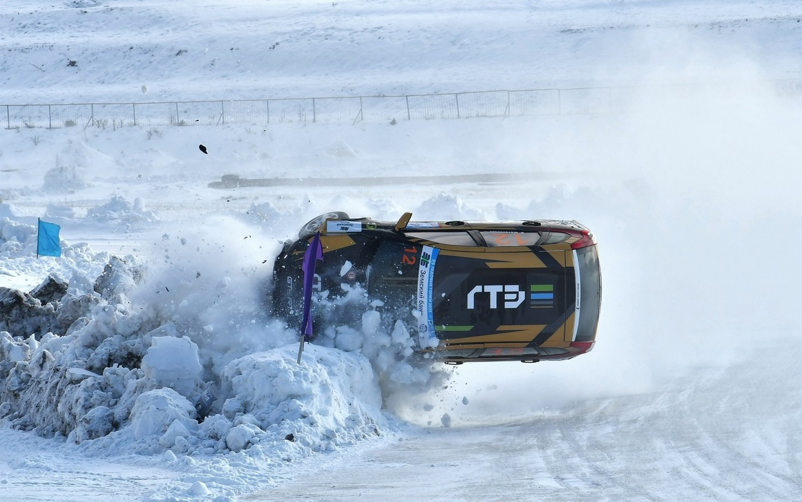

Прошёл первый этап чемпионата Пермского края по автокроссу
8 февраля 2025 года в д.Заосиново состоялась гонка, где принимали участие дети и взрослые в возрасте от 5 до 50 лет. В ходе гонки, произошёл один единственный переворот, который совершил Шейн Роберт на своей Ладе Калине. После этого переворота он всё же смог выехать на финал и занял 4 место из 7 участников на поврежденной машине.
Дата публикации: 09.02.2025